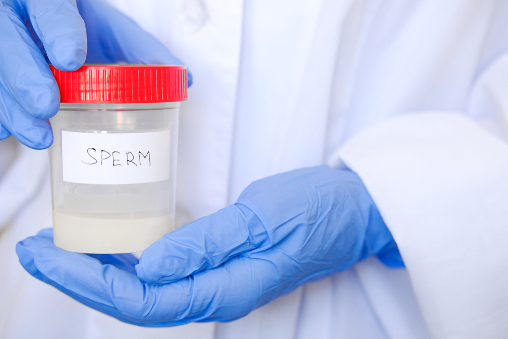

Natural remedies
Foods to improve sperm count
Treatment
Summary
What are the best ways to increase sperm count?
Sperm count refers to the average number of sperm present in one sample of semen. Fertility doctors assess sperm count during routine semen analyses and consider it to be an important factor for fertility.
Based on the most recent World Health Organization (WHO) guidelines, experts consider a healthful sperm count to be 15 million per milliliter (ml), or at least 39 million per ejaculate.
Doctors consider a sperm count under 15 million per ml to be low, and it may cause fertility issues.
Overall, health professionals believe that factors that influence testosterone levels have the most significant impact on sperm number and quality.
Certain medical conditions — including inherited genetic disorders, infections, and tumors — can also impact sperm count.
However, some lifestyle choices and natural remedies can help support the hormones that control sperm production, which may aid the healthy development of sperm and improve sperm count.
In this article, we look at natural remedies, dietary changes, and medicines that may improve sperm count.
Natural remedies
For several decades, researchers have known that sperm quality and fertility rates have been declining in most Western nations.
According to one 2017 study, the average sperm count in North America, Europe, Australia, and New Zealand dropped by 59.3% between 1973 and 2011.
Despite studies having identified this, scientists still do not fully understand the reasons for this decline. Research into reliable methods for reversing a low sperm count is ongoing.
Practitioners of ancient, herbal, and traditional medicine have used several nonpharmacologic remedies to increase sperm count and improve sperm health for thousands of years. What is more, researchers have suggested that most of these remedies can actually influence sperm count in some way.
The following are some natural ways to increase sperm count.
- Get enough exercise and sleep
- Quit smoking
- Avoid excessive alcohol and drug use
- Avoid certain prescription medications
- some antibiotics
- anti-androgens
- anti-inflammatories
- antipsychotics
- opiates
- antidepressants
- anabolic steroids, which may continue to affect sperm count for up to 1 year after stopping the medication
- exogenous or supplementary testosterone
- methadone
- Take a fenugreek supplement
- Get enough vitamin D
- Take ashwagandha
- Eat more antioxidant-rich foods
- beta-carotene
- beta-cryptoxanthin
- lutein
- vitamin C
- Increase healthful fat intake
- Reduce unhealthful fat intake
- Limit exposure to environmental and occupational contaminants
- 12. Limit the consumption of soy and estrogen-rich foods
- Get enough folate and zinc
Several studies have suggested that weight loss and exercise among people with overweight or obesity can lead to an improved or increased sperm count. However, the science linking a healthy body mass index (BMI) to a healthy sperm count is still weak.
One 2017 study examined the benefits of performing a 16 week aerobic exercise program of at least three 50-minute sessions per week. The participants reached 50–65% of their peak heart rate.
In the study, regular exercise increased sperm count and motility in 45 men with obesity and sedentary lifestyles.
A 2016 meta-analysis that reviewed the results of over 20 studies with a total of nearly 6,000 participants found that smoking consistently reduced sperm count.
The researchers found that people who smoked moderate or heavy amounts of tobacco had a lower sperm quality than people who smoked tobacco less heavily.
The number of controlled studies to have explored the link between sperm health and drugs is limited. This is because testing illicit substances can lead to ethical problems.
However, one 2018 review has linked the worldwide use of drugs such as alcohol, marijuana, and cocaine to decreased sperm production. Some evidence is conflicting, so further research is necessary to confirm this link.
Some prescription medications can potentially decrease healthy sperm production. Once the male stops taking the medication, however, their sperm count should return to normal or increase.
Medications that may temporarily reduce the production and development of sperm include:
Males should seek consultation with a healthcare provider if they believe that a medication they are currently taking may be reducing their sperm count or affecting their fertility.
Fenugreek has long been in use as a natural remedy for poor sperm health, and advocates suggest that it may help improve sperm count.
In fact, one 2017 study found that the patent-pending compound Furosap, which manufacturers developed from fenugreek seeds, significantly improved overall semen quality and sperm count.
Researchers are not entirely sure why, but blood levels of vitamin D and calcium appear to impact sperm health.
In a 2019 literature review of 18 studies, researchers found a significant association between improved fertility in male participants and a higher level of vitamin D in the blood.
However, the study authors do advise caution when interpreting these results, and they recommend further clinical trials to confirm their findings.
Research shows that a deficiency in calcium may also adversely impact sperm count.
Ashwagandha, or Indian ginseng, has long played a role in traditional medicines as a remedy for several forms of sexual dysfunction.
A 2013 study found that 46 males with low sperm counts who took 675 milligrams of ashwagandha daily for 90 days saw a 167% increase in their sperm count.
Antioxidants are molecules that help deactivate compounds called free radicals, which damage cells.
Several vitamins and minerals act as antioxidants, and some studies have linked antioxidant consumption with increased sperm count.
According to a 2019 review, antioxidants that may contribute to a healthy sperm count include:
Polyunsaturated fats are crucial for the healthy development of the sperm membrane. Such fats include omega-3 and omega-6.
A 2019 review of three studies found that males with infertility who supplemented with omega-3 fatty acids experienced a significant improvement in sperm motility and concentration, compared with males who did not take omega-3 supplements.
A 2014 study surveyed 209 healthy Spanish males aged 18–23 years. The researchers found that as they increased their consumption of trans fatty acids, their sperm count decreased proportionately.
As pollution and congestion increase, researchers often link environmental factors such as air quality and exposure to toxic chemicals to reduced sperm health and count.
Specifically, a 2019 study linked living in highly industrial areas with heavy air pollution to lower sperm counts.
Avoiding environmental toxins as often as possible also contributes to better overall health.
Some foods, especially soy products, contain plant estrogen. This can reduce testosterone bonding and sperm production.
A 2019 study of 1,319 males in China found that higher concentrations of plant estrogen in the semen meant lower quality sperm.
Many canned and plastic products are also high in synthetic forms of estrogen. Bisphenol A is a compound that binds to estrogen receptors in the body and may also impact male fertility after exposure, according to one 2019 review.
Limited studies suggest that consuming folate and zinc in combination may improve the overall health of sperm, including concentration and count.
Foods to improve sperm count
For the most part, taking supplements is a safe way for a person to reach their daily requirement for most vitamins, minerals, and antioxidants. However, the body does not always easily absorb them.
Most studies suggest that eating foods that provide good amounts of specific compounds and chemicals allows the body to use them more efficiently.
The best way to increase sperm count naturally may be to increase the consumption of foods high in sperm-friendly nutrients, such as vitamin C, antioxidants, and polyunsaturated fats.
A 2016 review highlighted several dietary patterns that could lead to a low sperm count. These included:
- eating high quantities of red and processed meat
- not eating enough polyunsaturated fatty acid
- having a high intake of energy
- consuming low levels of antioxidants
- consuming high levels of saturated fats
- eating limited amounts of fruits and vegetables
According to a 2012 review, no specific food is the key to increasing sperm count through the diet. Instead, considering the diet as a whole is the best way to improve fertility.
The review did, however, highlight cantaloupe melon as a particularly powerful food in relation to improving sperm count.
Treatment
A doctor may prescribe medication for males with very low sperm counts and those who have additional health factors or considerations.
Medications that doctors sometimes prescribe to treat a low sperm count include:
- serophene oral, though this is more common in female infertility.
- Gonal-F RFF Redi-ject (follitropin alfa or gonal-F)
- antibiotics, if a low sperm count occurs due to a urinary or reproductive tract infection
- human chorionic gonadotrophin (Choragon or Pregnyl)
- letrozole or anastrozole
- exogenous androgens
Summary
Most research supports the use of lifestyle changes, natural remedies, and dietary adjustments to help a male manage and improve a low sperm count.
Such lifestyle changes include adopting a regular exercise regimen and sleep schedule, as well as avoiding tobacco, excess alcohol, and illicit drugs. It may also help to avoid particular prescription medications.
Taking herbal supplements, such as fenugreek and ashwagandha, may also help.
Dietary changes that promote a higher sperm count include reducing the intake of trans fatty acids and increasing polyunsaturated fatty acid and vitamin D intake.
Maintaining a healthful, balanced diet that includes plenty of fruits and vegetables is the best way to boost sperm count through the diet.
References
https://www.medicalnewstoday.com/articles/320010
To find out about how St Ives Specialist Hospital can assist you, book an appointment with us today.
- Email: info@stiveshealthcare.com
- Call: 08039494531, 07088727358
- Whatsapp: +234 (0)8039494531.
- Visit: 12 Salvation road, Opebi, Ikeja